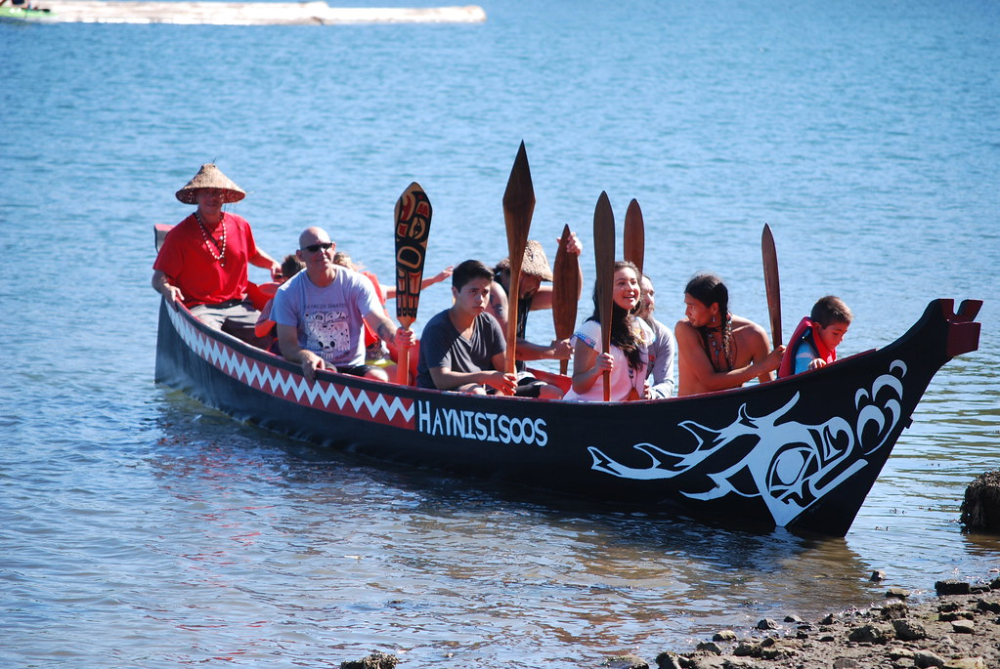
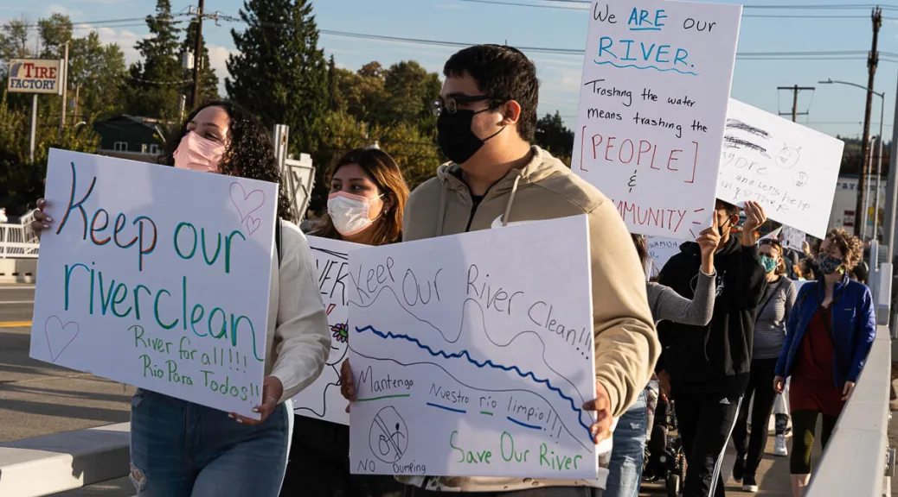

Page 7
Since time immemorial, the waters of the Duwamish have sustained the life of a verdant valley, from the bountiful salmon that plied its course from sea to mountain, to the people – dxʷdəwʔabš, the Duwamish themselves – who lived in harmony with the river that shares their name. Today the Duwamish and others in the community continue to fight for their river so that fishing and cultural practices may be truly restored.
 